BAM acquisition plots
Accepted processed recordings, P=4,8,16,32. Angle and speed are recorded data. The voltage panel is BAM's estimated control using its default STS3215 actuator, not measured supply voltage or a measured motor command or a fitted 12 V model. No simulation overlay.
sts3215_12v, up_and_down, m=0.1429, l=0.15, k=32 · sts3215_12v, sin_sin, m=0.1429, l=0.15, k=32 · sts3215_12v, up_and_down, m=0.1429, l=0.15, k=8 · sts3215_12v, lift_and_drop, m=0.1429, l=0.15, k=8 · sts3215_12v, lift_and_drop, m=0.1429, l=0.15, k=4 · sts3215_12v, sin_sin, m=0.1429, l=0.15, k=16 · sts3215_12v, sin_sin, m=0.1429, l=0.15, k=4 · sts3215_12v, sin_time_square, m=0.1429, l=0.15, k=4 · sts3215_12v, lift_and_drop, m=0.1429, l=0.15, k=16 · sts3215_12v, sin_time_square, m=0.1429, l=0.15, k=16 · sts3215_12v, lift_and_drop, m=0.1429, l=0.15, k=32 · sts3215_12v, up_and_down, m=0.1429, l=0.15, k=4 · sts3215_12v, sin_time_square, m=0.1429, l=0.15, k=32 · sts3215_12v, sin_sin, m=0.1429, l=0.15, k=8 · sts3215_12v, sin_time_square, m=0.1429, l=0.15, k=8 · sts3215_12v, up_and_down, m=0.1429, l=0.15, k=16 sts3215_12v, up_and_down, m=0.1429, l=0.15, k=32 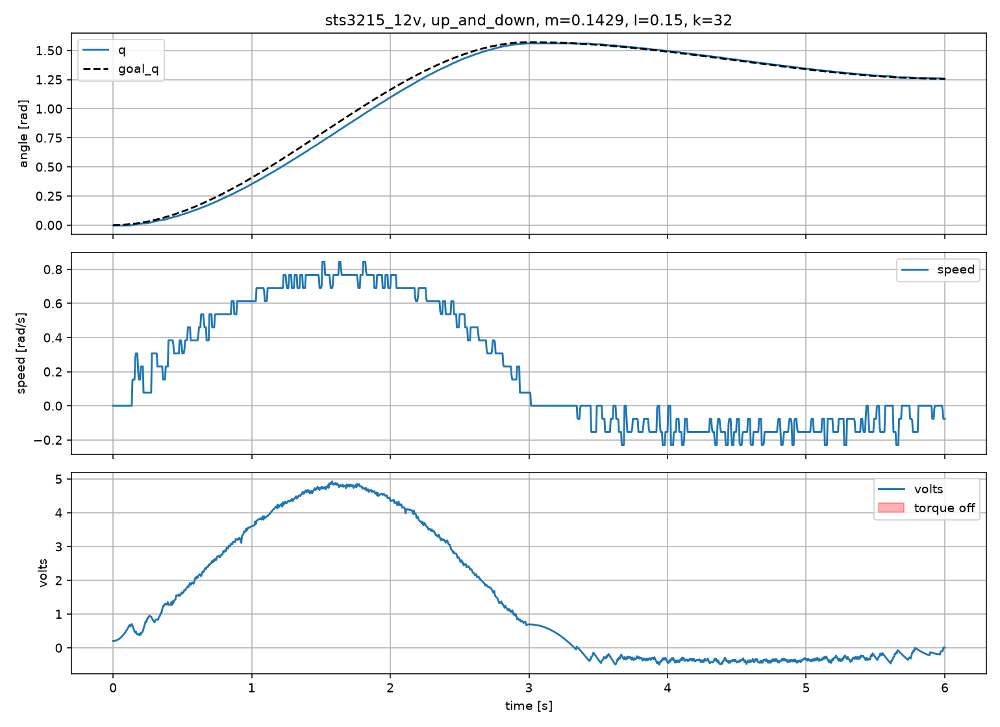
sts3215_12v, sin_sin, m=0.1429, l=0.15, k=32 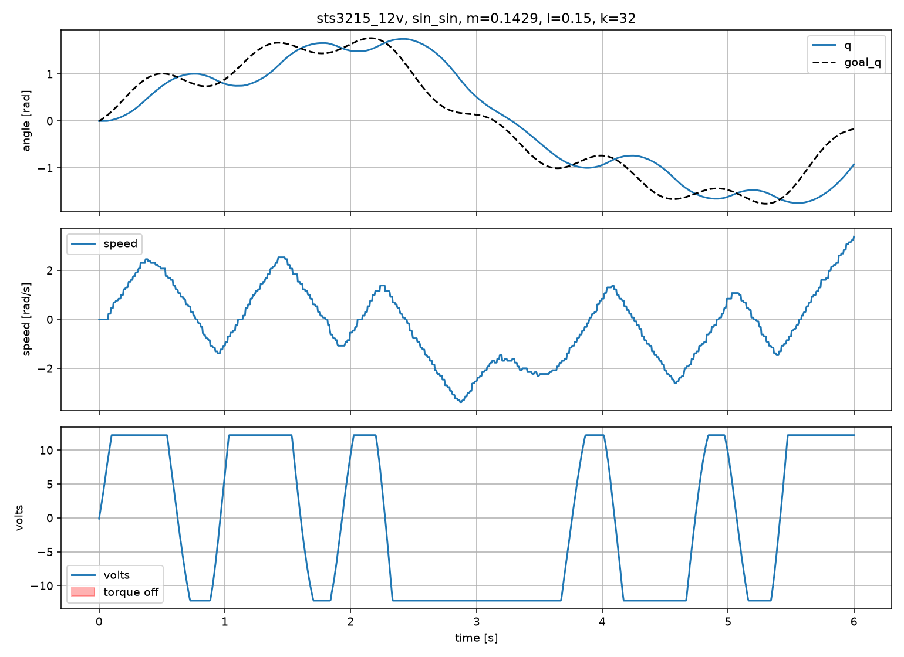
sts3215_12v, up_and_down, m=0.1429, l=0.15, k=8 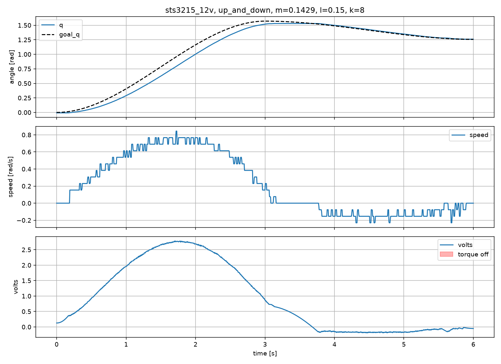
sts3215_12v, lift_and_drop, m=0.1429, l=0.15, k=8 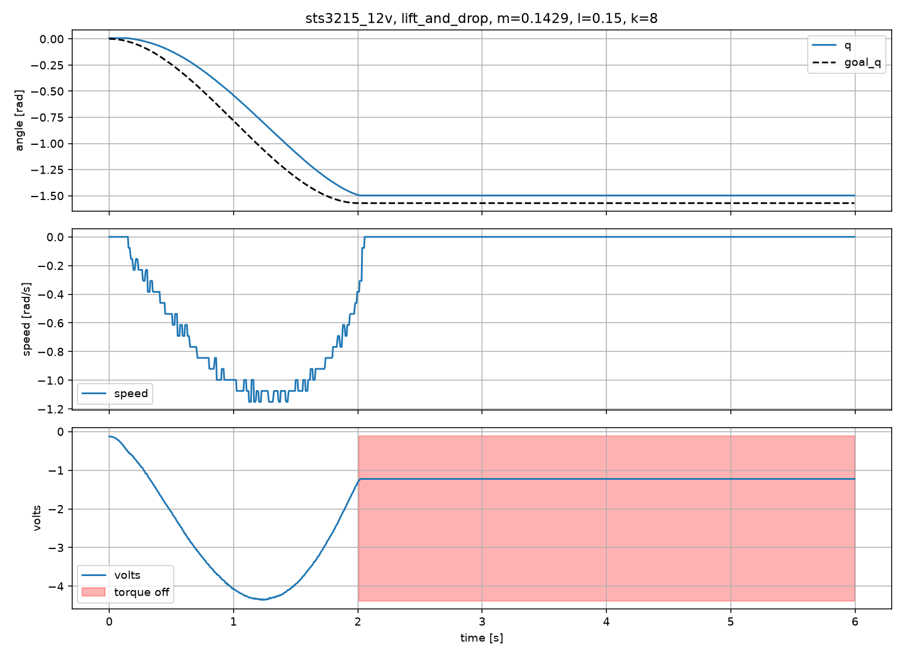
sts3215_12v, lift_and_drop, m=0.1429, l=0.15, k=4 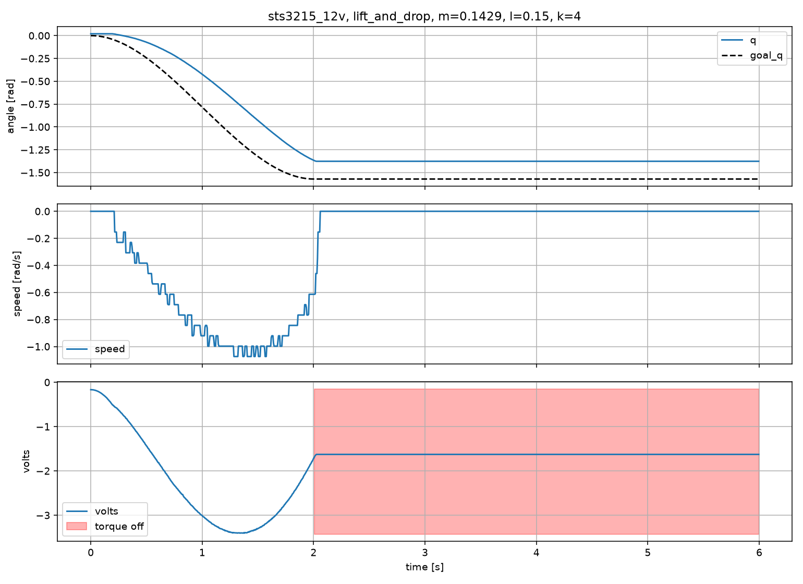
sts3215_12v, sin_sin, m=0.1429, l=0.15, k=16 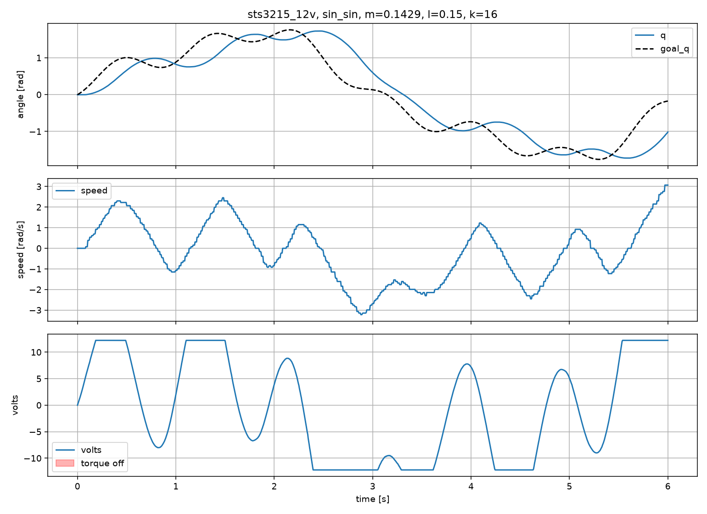
sts3215_12v, sin_sin, m=0.1429, l=0.15, k=4 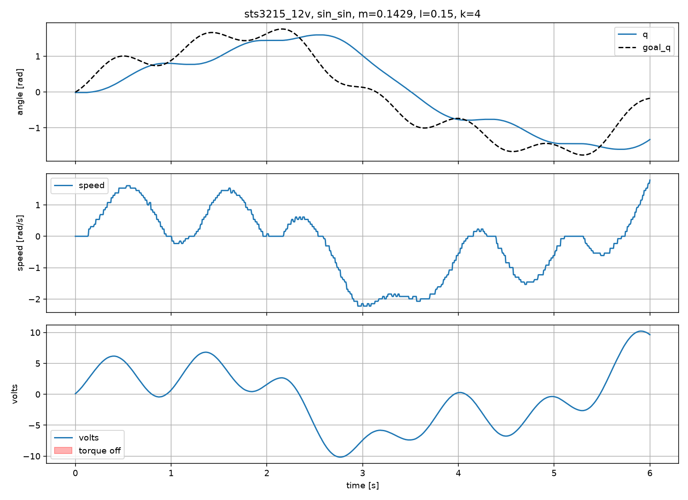
sts3215_12v, sin_time_square, m=0.1429, l=0.15, k=4 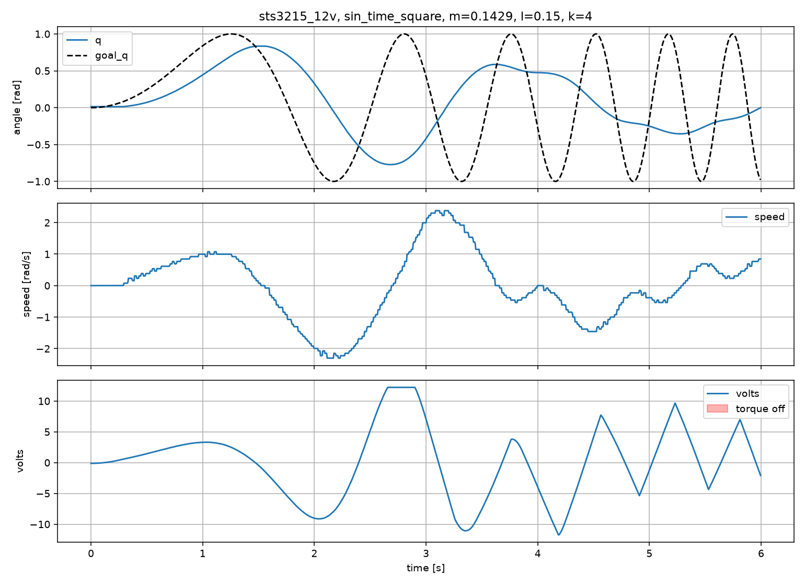
sts3215_12v, lift_and_drop, m=0.1429, l=0.15, k=16 sts3215_12v, sin_time_square, m=0.1429, l=0.15, k=16 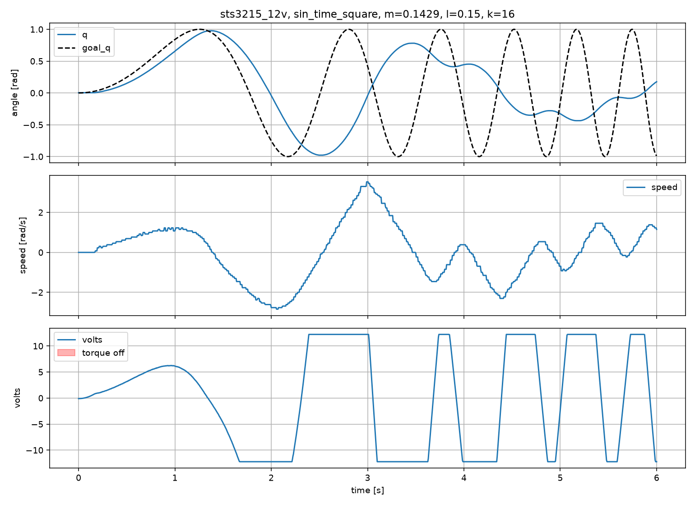
sts3215_12v, lift_and_drop, m=0.1429, l=0.15, k=32 sts3215_12v, up_and_down, m=0.1429, l=0.15, k=4 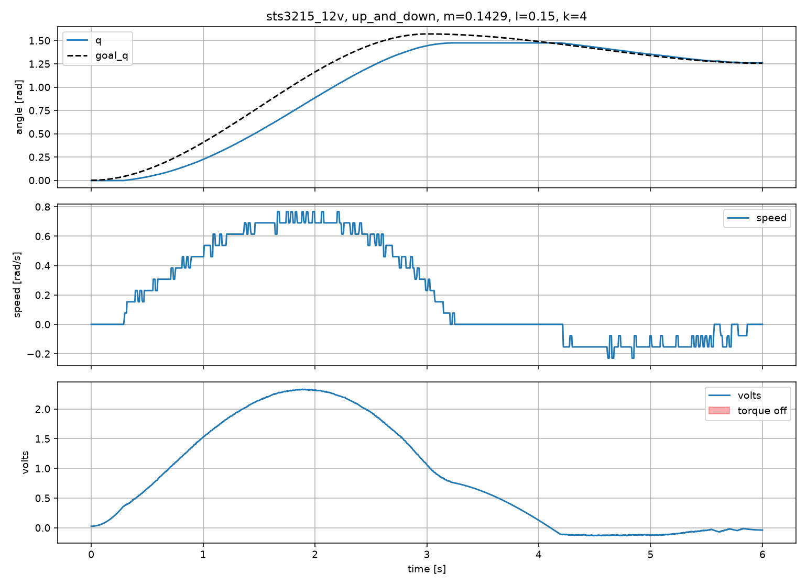
sts3215_12v, sin_time_square, m=0.1429, l=0.15, k=32 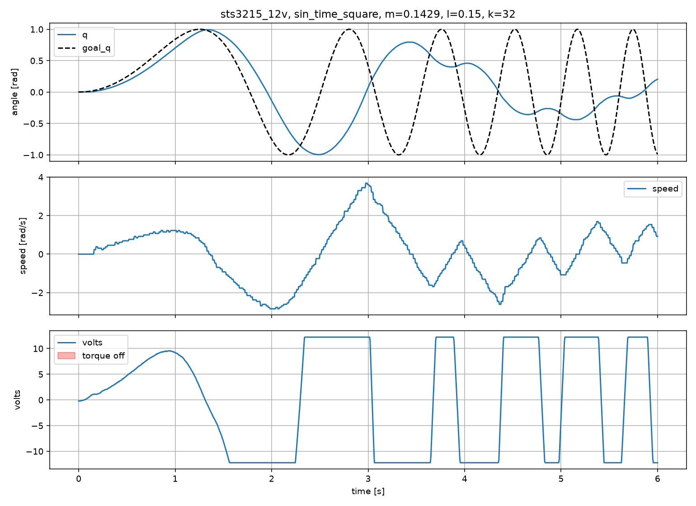
sts3215_12v, sin_sin, m=0.1429, l=0.15, k=8 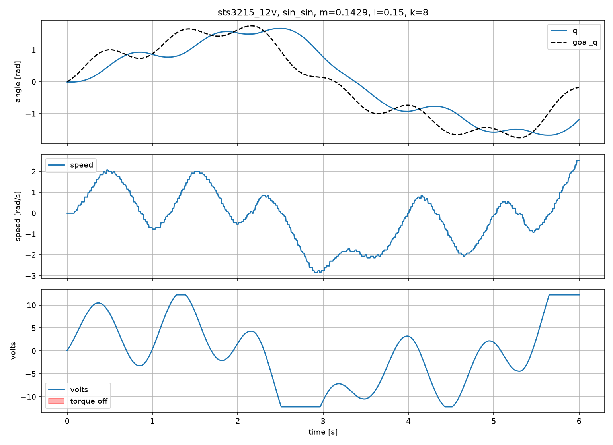
sts3215_12v, sin_time_square, m=0.1429, l=0.15, k=8 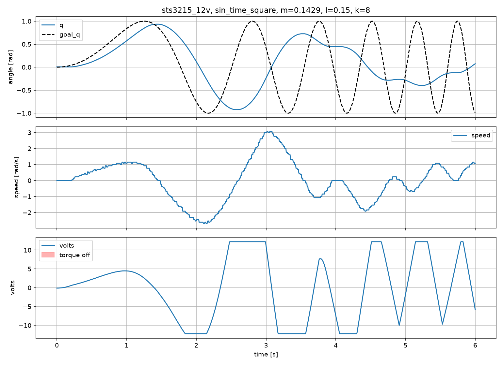
sts3215_12v, up_and_down, m=0.1429, l=0.15, k=16 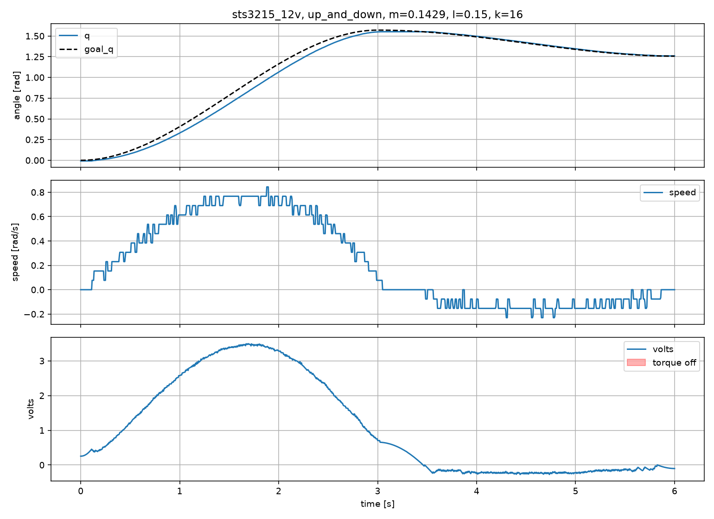